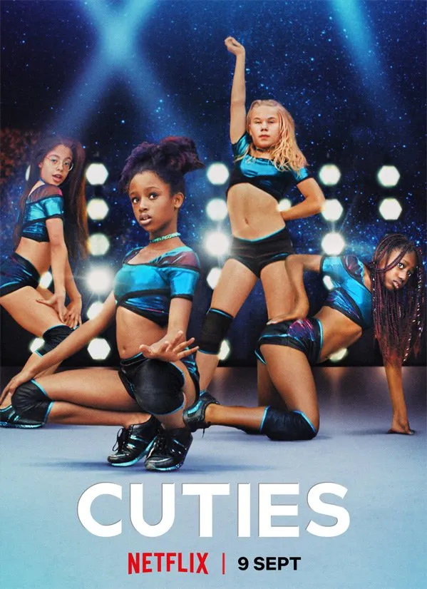
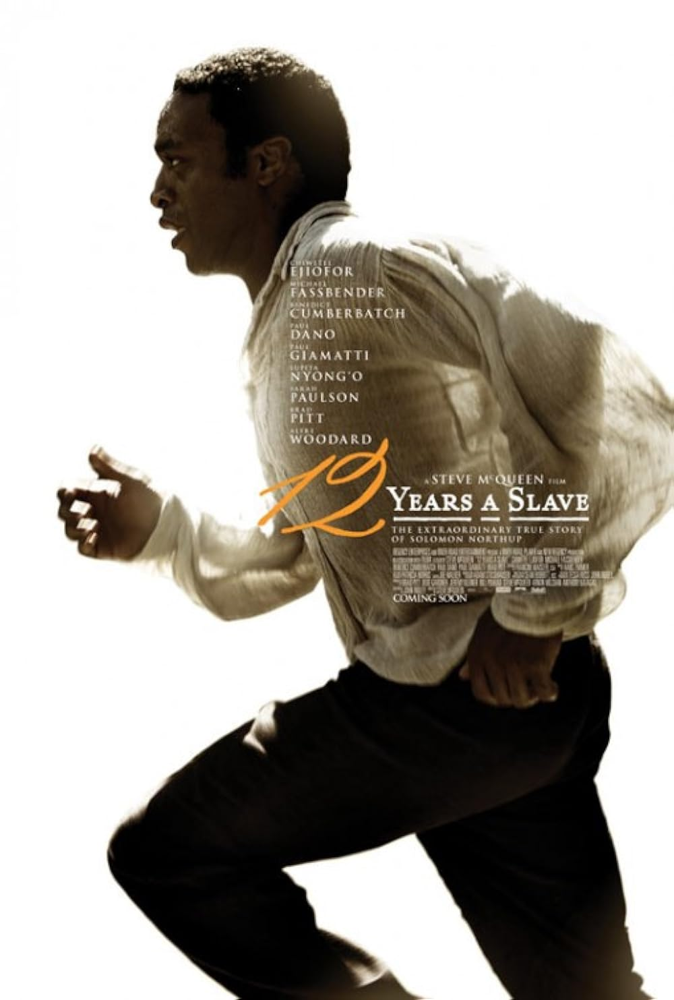

Our Favorite Movies
Overview of "Cuties"
"Cuties" is a coming-of-age drama that explores the challenges and pressures faced by young girls growing up in a digitalized world. The film tells the story of an 11-year-old girl who joins a dance troupe as she navigates issues of identity, family, and societal expectations.
Main Characters in "Cuties"
Thristy McThristrap
Thristy McThristrap is a confident and strong bodybuilder and weightlifter. Her charisma and determination inspire those around her. With many admirers vying to be her boyfriend, she struggles to balance her personal ambitions with the attention she receives.
Amy
Amy is the central character of the film, a shy and curious girl navigating the conflicts between her traditional upbringing and her desire for freedom and self-expression.
Jessie
Jessie is Amy’s best friend and a member of the dance troupe. She is bold and outspoken, often acting as the leader of the group and encouraging Amy to step out of her comfort zone.
Main Characters in "Django Unchained"
Django

Django, played by Jamie Foxx, is a freed slave who embarks on a journey to rescue his wife from a brutal plantation owner. His courage and determination drive the story's action and heart.
Dr. King Schultz
Dr. King Schultz, portrayed by Christoph Waltz, is a German bounty hunter who becomes Django's mentor and ally. His sharp wit and strategic mind are key to their success.
Calvin Candie
Calvin Candie, played by Leonardo DiCaprio, is a ruthless plantation owner who serves as the film's primary antagonist. His cruelty and arrogance make him a memorable villain.
Plot and Personal Thoughts on "12 Years a Slave"
The Plot
"12 Years a Slave" is a historical drama based on the true story of Solomon Northup, a free African-American man who is kidnapped and sold into slavery. The film chronicles his harrowing journey and eventual fight for freedom.
Personal Thoughts
"12 Years a Slave" is a powerful and emotional film that sheds light on the brutal realities of slavery. Its strong performances and impactful storytelling make it a masterpiece and a necessary watch.